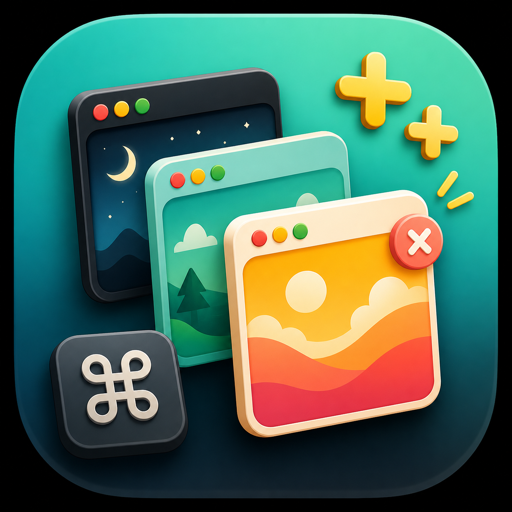
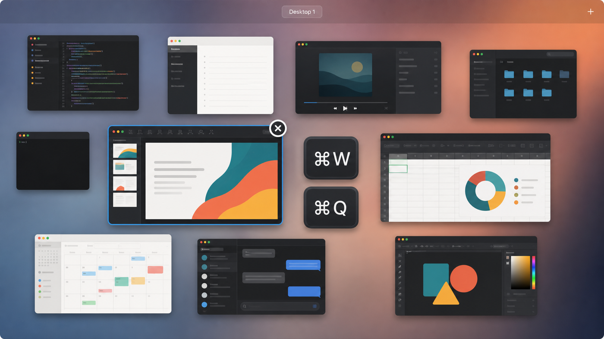

0.1.4
- Hardened shortcut handling, Mission Control detection, and diagnostics logging.
- Added stricter Supporter Pack input handling and release-package verification.

Mission Control++Tiny shortcuts for Mission Control.
Close the window under your pointer or quit the hovered app without leaving Mission Control.
Version 0.1.4 • Free core • Supporter Pack staged • macOS 13+

Stay in Mission Control and act on the window you are already looking at. No Dock icon, no extra app chrome, and a menu bar icon only if you want one.
Mission Control++ only listens while Mission Control is active. Outside Mission Control, your normal shortcuts stay normal.
Mission Control++ stays free and open source. Supporter extras are built and ready, with pay-what-you-want checkout planned after the separate Stripe account is set up.
Got a supporter code? Enter it in the app to unlock extras now. Planned checkout: Stripe customer-chooses-price Payment Link with a $1 minimum.
Small releases, written plainly.
Supporter Pack grant codes can now unlock customization before Stripe checkout exists.
UNIVERSAL=0.I’m providing this little tool for free, and I don’t have a $99/year Apple Developer account to sign it properly yet. For now, you’ll need to use Apple’s Open Anyway workaround in System Settings → Privacy & Security.